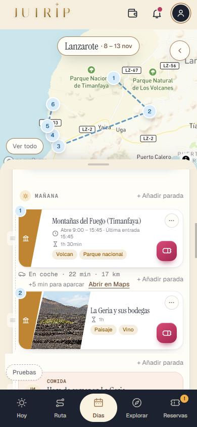
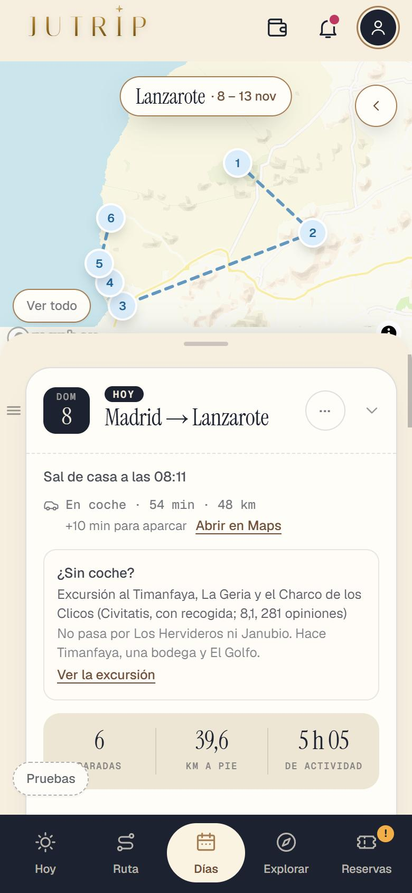
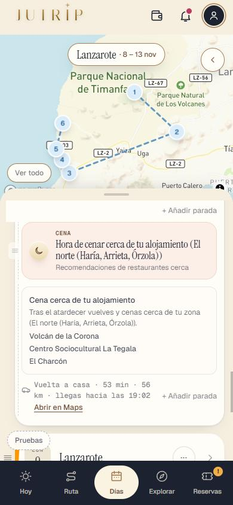
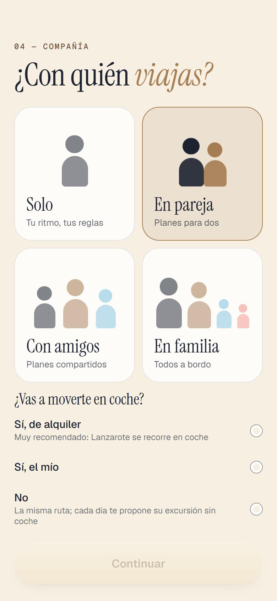
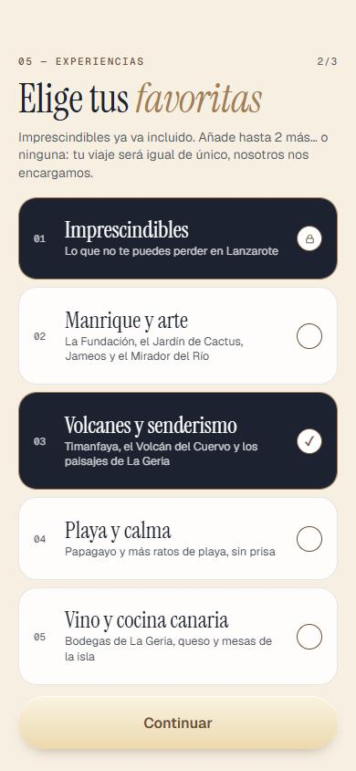
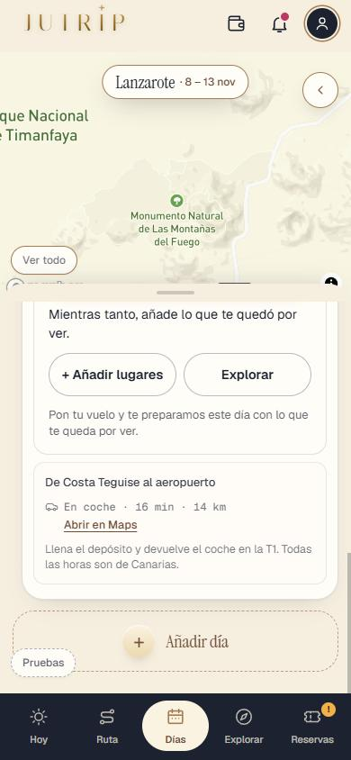
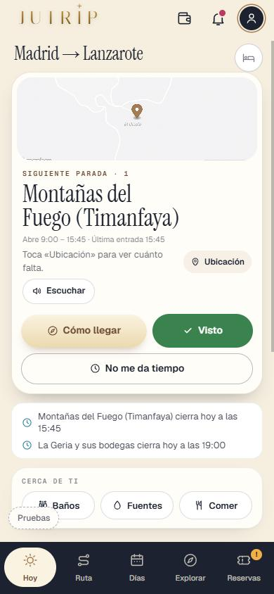

Repaso de la Tanda LZ2a
Lanzarote, parte 2a: que la app sepa moverse en coche y monte los días (para tu viaje del domingo 8-nov). Lanzarote sigue OCULTO (solo administrador); Roma no cambia. Marca cada punto en tu teléfono cuando lo hayas comprobado (se guarda en este navegador).
0 · Antes de empezar ✅ Hecho — Prompt guardado tal cual (llegó entero, acaba en «reinicia el api-server»); portada de Lanzarote la que elegiste, la 3 (Papagayo); Roma no cambia; Lanzarote sigue oculto; nota de estado cada 30 minutosMuestra de 60 fechas de Roma idéntica y pruebaJutrip en 0 tras cada cambio del motor. Lanzarote usa su propio camino de motor (`shared/routeEngine/cocheTrip.js`), al que solo entra un destino con `destination_config.medio === 'coche'`: Roma no pasa por ahí. Dos agentes, tres rondas. Dónde: No es de móvil. 1 · El motor en coche ✅ Hecho — Trayectos en coche entre paradas («En coche · 25 min · 18 km») con [Abrir en Maps] al aparcamiento, a pie dentro de una parada; nunca «taxi»Con la matriz de Mapbox de la LZ1 más el rato de aparcar de cada sitio (5 por defecto; Timanfaya y Mirador del Río 10; Papagayo 20; Teguise 5, 15 en domingo). Se pinta en dos líneas: «En coche · 22 min · 17 km» y debajo «+5 min para aparcar · Abrir en Maps», con icono de coche (Design lo mejorará después). Algunos sitios salen como dos paradas con el mismo nombre (Haría y Casa-Museo, Playa Blanca y Faro, Caleta de Famara): vienen así de los datos de la LZ1 y no llevan trayecto entre sí. Dónde: DÍAS > cualquier día de Lanzarote. 
✅ Hecho — La ida desde el alojamiento y la vuelta a casa cuentan; tope de 3 h de coche al díaSin pase: desde la zona más lejana a ese día (la ruta es igual para todos). Con pase: desde la zona del viajero, con la hora de salir de casa («Sal de casa a las…»). En las 2.592 combinaciones (domingo, sábado, viernes, 1-ene, invierno y verano; 2 a 7 días; 6 zonas; con y sin pase; con y sin coche) ningún día pasa de 180 min de coche; el peor, el día 1 desde El norte, da 179. El día de Papagayo desde El norte baja a 158 min (con la cena cerca). Dónde: DÍAS > cabecera y final de cada día. 
✅ Hecho — Sin paseo nocturno; entradas con hora solo online (Timanfaya y la Cueva) con «Llegada a…» 15 min antes y el aviso de comprar con tiempoEl día acaba con el atardecer y la cena. Timanfaya y la Cueva llevan `llegada_antes_min: 15`, `entrada_solo_online` y el texto de `_destino.json`. Dónde: DÍAS > día 1 y día 2. ⚠️ A medias — Lo que la LZ1 dejó atado a Roma y hace falta: meses de invierno, interruptor del día 4, insideSwitch, llegadaDia1, DayMenu, ciudad de Civitatis por excursiónEl motor en coche usa `meses_invierno` solo para la temporada y el atardecer; el interruptor del día 4 no aplica a Lanzarote (no lo tiene). `insideSwitch.js` y `llegadaDia1.js` NO se han tocado: el camino en coche no pasa por ellos (la llegada la cubre `cocheTrip` con la opción `llegada`). La ciudad de Civitatis por excursión ya sale de `_civitatis.json`. El menú del día (DayMenu) sin Pompeya ni Florencia queda para la LZ2b junto con el resto de textos de Roma en la interfaz. Dónde: No es de móvil. 2 · Los días de Lanzarote ✅ Hecho — El motor lee listas.json: 5 días curados, variantes, orden por prioridades, La Graciosa como excursión y Fuerteventura en 7 días; comidas con su alternativaAplicadas: domingo (día 1 con comida en Bodegas Rubicón; día 3 con Teguise a las 10:00 y sin Campesino), sábado (día 2), viernes con Noches de Jameos (opcional), 1 de enero (días 2 y 3 con LagOmar), viaje de 2 días (día 2 con la Fundación), arte (día 3 con LagOmar y sin Castillo), volcanes (día 1 con Volcán del Cuervo, día 5 con Caldera Blanca), día 2 al revés (opcional), día 2 en verano (sin Helechos y con La Garita, opcional), día 4 en verano (+60 min de playa) y día 4 con kayak (Civitatis 9:45 desde Playa Blanca). Orden: día 1 el primero, el domingo para el día 3, el sábado para el día 2, el día 2 nunca el último; los 7 días siguen `reparto.por_dias`. Si un viaje empieza en avión, el día 1 sale del aeropuerto con el rato de recoger el coche (45 min de alquiler, 20 si es propio). La comida empieza siempre antes de las 15:00 (comprobado). NO se ha cambiado ningún día. Dónde: DÍAS. ⚠️ A medias — Variantes sin aplicarNo aplicadas porque el documento no las deja claras: día 4 en invierno («más corta» sin minutos), día 1 en verano (solo dice que el tiempo libre se queda en El Golfo o Janubio), día 3 en verano (el Reducto no es un sitio de los datos), día 5 en verano (La Garita es solo «quien quiera bañarse»), día 2 «playa o verano por la mañana» (el propio documento pone ⚠️ «comprobar que cabe») y La Graciosa con Caletón Blanco (necesita otro horario de ferry). Dime cuáles quieres y cómo. Dónde: No es de móvil. ✅ Hecho — Regla nueva 1: los opcionales salen solo si caben (se quita primero el menos importante; el viajero puede añadirlo desde EXPLORAR)El día 3 quita primero la Ciudad Estratificada y así llega al Campesino a su hora (antes, con los dos opcionales, llegaba a las 17:21 y cerraba a las 18:00). También se quita un opcional que entraría con el sol casi puesto. Salen en `opcionales_quitados` y arriba de cada día. El día 3 con Arte (LagOmar) también cabe en todas las zonas probadas: no hay ningún caso que no quepa. El aviso al añadirlo a mano desde EXPLORAR («posiblemente ya esté cerrado») es el de siempre de la 10S10. Dónde: DÍAS > día 3. ✅ Hecho — Regla nueva 2: la cena cerca del alojamiento (con pase 2-3 restaurantes; sin pase «Cena cerca de tu alojamiento» sin restaurante); el día 4 desde El norte baja de 3 hRestaurantes de `RESTAURANTES_LANZAROTE.md` (solo comidas de los días y cenas por zona) en `data/dias/lanzarote/_restaurantes.json`. Son recomendaciones: no se valida su horario, como en Roma. El día 4 desde El norte, que daba 3 h 09, ahora da 158 min. Título: «Hora de cenar cerca de tu alojamiento (El norte)». Las cenas no mencionan restaurante sin pase. Dónde: DÍAS > final de cada día, con y sin pase. 
3 · Las zonas y el pase ✅ Hecho — Las zonas de alojamiento de Lanzarote en lugar de Termini, Prati…Seis zonas más «Aún no lo sé», con los ids `puerto_del_carmen`, `playa_blanca`, `costa_teguise`, `arrecife`, `el_norte`, `el_interior` (el documento de zonas decía `norte` e `interior`; se mantuvieron los de los datos). Hablas de 7 zonas: son las 6 y la de «Aún no lo sé». Dónde: RESERVAS > Alojamiento > Tu zona. ✅ Hecho — Con pase, la zona adapta CADA día (hora de salir, cena cerca, aviso si pasa de 3 h)Al elegir la zona (o al abrir el viaje con pase y zona) cada día de ciudad se rehace por `/api/rebuild-day` con `zona`, `pase` y `coche`, todos de golpe y con un solo «Deshacer» («Hemos adaptado cada día a donde duermes»); no pisa lo que el viajero cambió. Probado con Costa Teguise y El norte (el día 1 desde El norte da 179 min). Los días de excursión (La Graciosa) también se pueden adaptar desde la ronda 3 (visto con tsc y pruebas, no en el móvil). «El orden al revés cuando sale más corto» queda para la LZ2b. Dónde: RESERVAS > Alojamiento > Tu zona (con pase) y DÍAS. ✅ Hecho — Texto del pase de Lanzarote: «Adaptamos cada día a donde duermes: a qué hora salir, por dónde empezar y dónde cenar cerca»Solo para Lanzarote; el de Roma queda igual. Va en la línea con candado de Alojamiento (sin pase). Dónde: RESERVAS > Alojamiento, sin pase. 4 · El formulario de Lanzarote ✅ Hecho — «¿Vas a moverte en coche?»: «Sí, de alquiler» (Muy recomendado), «Sí, el mío» y «No»Va en el paso de la compañía, debajo de «¿Con quién viajas?», solo en Lanzarote y obligatoria; se guarda en `answers.coche`. De alquiler enciende el bloque del coche de alquiler de RESERVAS y del día 1 (30-45 min de recogida). «No» da el aviso del documento al empezar. «Muy recomendado» sale como texto gris bajo «Sí, de alquiler», no como etiqueta: mejorable (Design). Dónde: Formulario > paso «Compañía». 
✅ Hecho — Sin coche: la misma ruta con aviso y, arriba de cada día, «¿Sin coche?» con la excursión de Civitatis y lo que deja fueraCada día lleva `sin_coche` con la excursión y su enlace de `_civitatis.json` (la ciudad de Civitatis cambia por excursión). Sin coche la ruta no lleva trayectos. Dónde: DÍAS > arriba de cada día, con «No» en el formulario. ✅ Hecho — Las 4 experiencias de Lanzarote (Manrique y arte, Volcanes y senderismo, Playa y calma, Vino y cocina canaria) y sin la pregunta del Free TourCon los ids `arte`, `volcanes`, `playa_y_calma` y `vino` (los mismos que lee `listas.json`). Dónde: Formulario > paso «Experiencias». 
5 · Llegar y volver ⚠️ A medias — Aeropuerto de Lanzarote (ACE) el día de llegada; tarjeta «Hoy vuelves a casa» con el trayecto en coche desde la zona; hora de CanariasLa llegada por ACE está en `data/dias/lanzarote/_llegada.json` (coche de alquiler como «Tu mejor opción», guagua y taxi como otras, devolución en la T1, aviso de la hora de Canarias; `salir_antes_min` 165, propuesta del documento) y se sirve por `/api/arrival-info`; NO he visto en pantalla la hoja de llegada y vuelta con un vuelo puesto (queda para ti). En DÍAS, el último día muestra «De Costa Teguise al aeropuerto · En coche · 16 min · 14 km» con [Abrir en Maps] y «Llena el depósito y devuelve el coche en la T1. Todas las horas son de Canarias». La tarjeta «Hoy vuelves a casa» de la 10S11 no se ha adaptado a Lanzarote (sale la general). Hora `Atlantic/Canary` en DÍAS y HOY: vista en pantalla. Dónde: RESERVAS > Llegada y vuelta; DÍAS > último día. 
6 · Que Eric pueda usarla en su viaje ⚠️ A medias — Crear el viaje de Eric (domingo 8-nov, 5 días, Costa Teguise y El norte, con y sin pase) y usar DÍAS y HOY con la hora de CanariasProbado en pantalla con un administrador SIMULADO (no con tu cuenta: no se escriben contraseñas): `window.__rutaLanzarote({ zona, coche })` (solo en desarrollo, `src/dev/rutaDePrueba.ts`) crea el viaje (domingo 8-nov, 5 días de ruta y la vuelta el 13). Con administrador real no se ha comprobado. HOY no pinta el trayecto en coche (siguiente parada con «Cómo llegar»), y «Cerca de ti» enseña todavía Baños y Fuentes en vez de gasolineras: es de la LZ2b. Dónde: Con tu cuenta de administrador: crear un viaje a Lanzarote desde el domingo 8-nov. 
⚠️ A medias — Con administrador real se ve Lanzarote; sin sesión, noSin sesión no se ve: `/api/destinos-curados` solo trae Roma y cualquier petición con Lanzarote da 404 (comprobado con la API reiniciada sin la variable de ocultos). Con administrador real no comprobado: lo haces tú abriendo la app con tu cuenta. Para abrirlo a todos, `DESTINOS_OCULTOS=` en el entorno del servidor. Dónde: Abrir la app con tu cuenta de administrador y sin sesión. 7 · La prueba ✅ Hecho — pruebaTandaLZ2a con la muestra de fechas de Lanzarote (domingo, sábado, viernes, 1-ene, invierno y verano; 2 a 7 días; 6 zonas; con y sin pase; con y sin coche); muestra de 60 de Roma idéntica; pruebaJutrip en 02.592 días construidos y unas 50.900 comprobaciones: ningún día pasa de 3 h de coche, ningún sitio se pasa de su última entrada o turno, comida antes de las 15:00, opcionales quitados cuando no caben, cena cerca con pase, nunca «taxi» ni «Roma», nunca paseo nocturno, Lanzarote oculto para quien no es administrador. Ver el informe. Dónde: No es de móvil. Para tu viaje del domingo 8 Para ver Lanzarote desde tu cuenta de administrador, abre la app con tu sesión: el resto de personas no lo ven. Con pase, al elegir tu zona de alojamiento (RESERVAS › Alojamiento) cada día se rehace desde donde duermes, con un solo «Deshacer». Sin pase, la ruta sale igual para todos (desde la zona más lejana a ese día).
Todas las capturas
lz2a_cena_cerca_1 lz2a_dia_sin_coche_1 lz2a_formulario_coche_1 lz2a_formulario_experiencias_1 lz2a_hoy_1 lz2a_trayectos_1 lz2a_vuelta_1